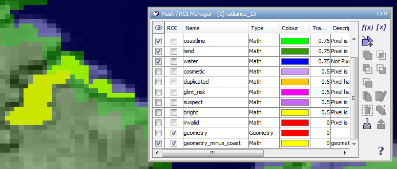

| Mask and ROI Management | |
Masks are useful to mask out image pixels either solely for image display or for image analysis. In the latter case we refer to a mask in the role of a region of interest (ROI). Currently BEAM supports three basic types of mask differing in the way the mask is defined:
In data modelling terms, a mask is a product node similar to a band or tie-point grid. It has a unique name and comprises a image (raster data) whose sample data type is Boolean. Each data product may comprise virtually any number of masks.
Not only the mask definitions but also their use in conjunction with a raster data set such as a band or tie-point grid are part of the data model stored within the product. A product "remembers" for a certain band or tie-point grid
A number of product formats define a default mask set. E.g. the Envisat MERIS L1 and L2 product types define a mask for each of their quality flags.
| Masks are managed by the Mask and ROI Manager tool window. To bring up this tool window click the tool button in the Tool Windows> tool bar or select the corresponding menu item in View / Tool Windows / Mask and ROI Manager. |
The manager allows creating new masks, editing mask properties and delete existing masks. It also allows for creating new masks based on logical combinations of existing masks. Furthermore masks may be imported and exported. If an image view is selected, the manager tool window can also be used to control the visibility and its role as a possible ROI for the currently displayed band. When the mask's ROI role is selected, it becomes available in the various raster data analysis tools, such as the Statistics, Histogram, and Scatter Plot tool windows.
|  |
| Mask and ROI Manager tool window |
| Band maths expression: Adds a new mask to the product which is based on a band maths expression. The expression can reference any bands, tie-point grids, single flags or other masks defined in the data product. For more information on band maths please refer to Band Maths. | |
| Value range: Adds a new mask to the product which is based on a value range of the selected band. All pixels whose sample values fall within the value range are part of the mask. | |
| Geometry: Adds a new mask to the product which is based on the geometries contained in an associated geometry container. The command effectively creates a new geometry container which in turn causes the creation of an associated geometry mask. For more information about geometry and geometry containers have a look into the Geometry Management. | |
| Union: Creates the logical union of two or more selected masks. | |
| Intersection: Creates the logical intersection of two or more selected masks. | |
| Difference: Creates the logical difference of two or more selected masks (in top-down order). | |
| Inv. Difference: Creates the logical difference of two or more selected masks (in bottom-up order). | |
| Complement: Creates the logical complement one or more selected masks. | |
| Copy: Creates a copy of the selected mask. | |
| Edit: Edits the definition of the selected mask. Double-clicking a mask entry in the table has the same effect. | |
| Delete: Deletes the selected mask. | |
| Import: Imports a mask from a plain text file. | |
| Export: Exports the selected masks to a plain text file. |